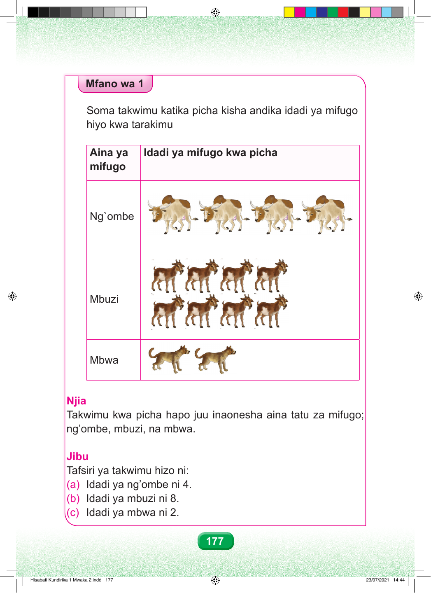

Mfano wa kwanza Soma takwimu katika picha kisha andika idadi ya mifugo hiyo kwa tarakimu Aina ya Idadi ya mifugo kwa picha Mstari wa kwanza una picha nne za ng'ombe. Mstari wa pili una picha nane za mbuzi. Mstari wa tatu una picha mbili za mbwa. Jedwali lina mistari mitatu ya mifugo. mifugo Ng`ombe Mbuzi Mbwa Njia Hatua ya kwanza. Takwimu kwa picha hapo juu inaonesha aina tatu za mifugo: ng'ombe, mbuzi na mbwa. Hatua ya pili. Jibu. Tafsiri ya takwimu hizo ni kama ifuatavyo: Sehemu a. Idadi ya ng'ombe ni nne. Sehemu b. Idadi ya mbuzi ni minane. Sehemu c. Idadi ya mbwa ni mbili. 177 Hisabati Kundirika 1 Mwaka 2.indd 177 23/07/2021 14:44